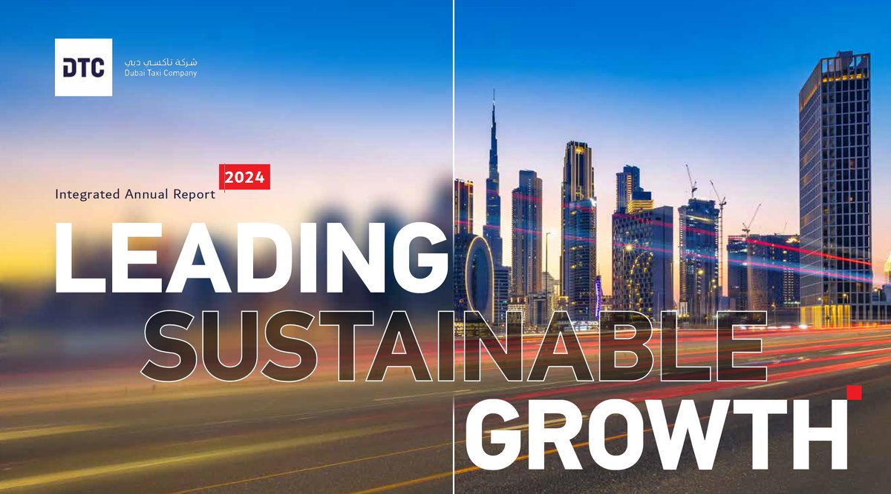

Dubai Taxi Company
Annual Report 2024
DFM
Content development and consultancy. Delivered while at Fanda.
Grand Award, ARC Awards 2025Gold, Corporate & Financial Awards 2025
View the report for Dubai Taxi Company Annual Report 2024 (opens in a new tab)